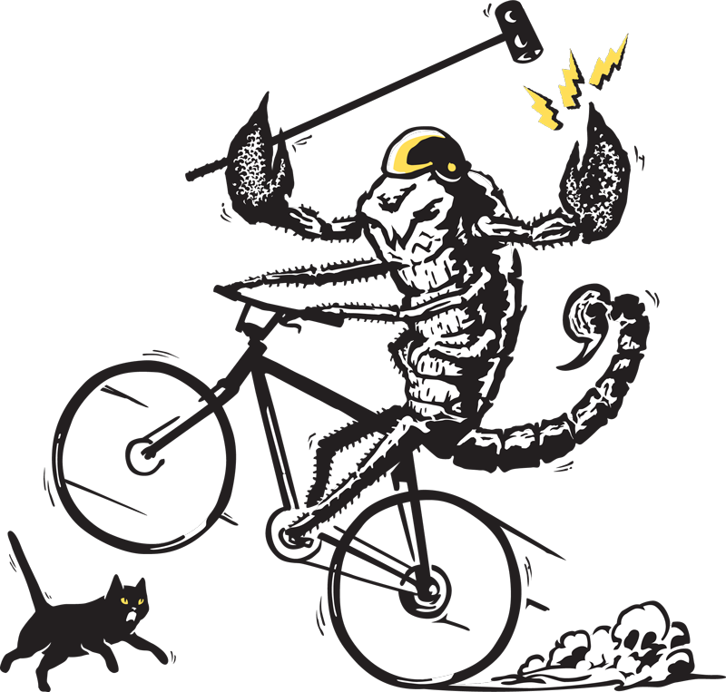

About Cleveland Bike Polo
Welcome to the online home of Cleveland Bike Polo, the city's most exclusive (read: only) hardcourt bike polo organization!
Cleveland Bike Polo is a diverse group, ranging in age from teenagers to 50-somethings, with varying professions and interests. We encourage anyone with a bike to come down and play, there will always be extra mallets for you to borrow.
We play at the Gordon Park or Kauffman Park tennis courts. Click here for a link to the maps. When the days get longer we also play on Tuesdays and/or Thursdays around 6pm. When we play we'll most likely post it on our facebook page, but if you start coming you'll be put on our call/text list.
Our organization has teams that compete all around the country, but most of our members typically play for fun/exercise/something to do outdoors.
We welcome anyone from all walks of life, so when you have a few hours free come check us out!
Want more information on Hardcourt Bike Polo? Click on the link below:
North American Hardcourt Bike Polo
Here's an intro video from Seattle Bike Polo explaining the game. Enjoy.
Our Schedule and Location
Your best bet is to follow our Facebook page in order for the most up-to-date hours. We try our best to post whenever we play. But in general, our hours are as follows:
Tuesday: 6pm - 9pm
Thursday: 6pm - 9pm
Sunday: 12pm - 5pm
We either play at Gordon Park in Cleveland or Kauffman Park in Lakewood. Here are the locations for both:
Gordon Park - after you go up the hill and make a right, head to the tennis courts in the back and you'll see us
Click here for driving directions to the Gordon Park Bike Polo Court
Kauffman Park - go past Taco Bell off of Detroit, you'll see us at the tennis courts on the left
Click here for driving directions to the Kauffman Park Bike Polo Court
How to Contact Us
The best way to get in touch is probably the Cleveland Bike Polo Facebook page.
We try to post when and where we're playing on our feed as much as possible. In the mean time, "Like" us, send us a message, or just stop down to the courts and try out a game. Hope to see you soon.
